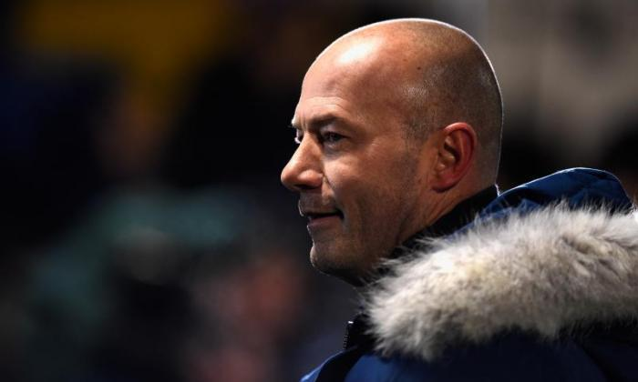

Alan Shearer
Alan Shearer, CBE, DL is an English retired footballer. He played as a striker in the top level of English league football for Southampton, Blackburn Rovers, Newcastle United and the England national team. He is Newcastle's and the Premier League's record goalscorer. He was named Football Writers' Association Player of the Year in 1994 and won the PFA Player of the Year award in 1995. In 1996, he was third in the FIFA World Player of the Year awards. In 2004 Shearer was named by Pelé in the FIFA 100 list of the world's greatest living players.
Shearer scored 283 league goals in his career, including a record 260 in the Premier League with a joint record 11 Premier League hat-tricks, and a total of 422 in all competitions including international at all levels. Until his retirement from international football in 2000, he appeared 63 times for his country and scored 30 goals. Shearer had a goals-to-game ratio of 0.667 throughout his career.
Since retiring as a player in 2006, Shearer has worked as a television pundit for the BBC. In 2009, he briefly left his BBC role to become Newcastle United's manager in the last eight games of their 2008–09 season, in an unsuccessful attempt to save them from relegation. Shearer is a Commander of the Order of the British Empire (CBE), a Deputy Lieutenant of Northumberland, a Freeman of Newcastle upon Tyne and an honorary Doctor of Civil Law of Northumbria and Newcastle Universities.
Shearer was born in Gosforth, Newcastle, in 1970 to working-class parents Alan and Anne Shearer. His father, a sheet-metal worker, encouraged a keen Shearer to play football in his youth, and the young player continued with the sport as he progressed through school. He was educated at Gosforth Central Middle School and Gosforth High School. Growing up playing on the streets of his hometown, he originally played in midfield because "it meant could get more involved in the games." Shearer captained his school team and helped a Newcastle City Schools team win a seven-a-side tournament at St James' Park, before joining the amateur Wallsend Boys Club as a teenager. It was while playing for the Wallsend club that he was spotted by Southampton's scout, Jack Hixon, which resulted in Shearer spending his summers training with the club's youth team, a time he would later refer to as "the making of me". Shearer had successful trials for First Division clubs West Bromwich Albion, Manchester City and Newcastle United, before being offered a youth contract with Southampton in April 1986.
Southampton (1986–1992)
Shearer was promoted to the first team after spending two years with the youth squad. He made his professional debut for Southampton on 26 March 1988, coming on as a substitute in a First Division fixture at Chelsea, before prompting national headlines in his full debut at The Dell two weeks later. He scored a hat-trick, helping the team to a 4–2 victory against Arsenal, thus becoming the youngest player – at 17 years, 240 days – to score a hat-trick in the top division, breaking Jimmy Greaves' 30-year–old record. Shearer ended the 1987–88 season with three goals in five games, and was rewarded with his first professional contract.
Despite this auspicious start to his career, Shearer was only eased into the first team gradually and made just ten goalless appearances for the club the following season. Throughout his career Shearer was recognised for his strength, which, during his time at Southampton, enabled him to retain the ball and provide opportunities for teammates. Playing as a lone striker between wide men, Rod Wallace and Matt Le Tissier, Shearer scored three goals in 26 appearances in the 1989–90 season, and in the next, four goals in 36 games. His performances in the centre of the Saints attack were soon recognised by the fans, who voted him their Player of the Year for 1991.
In the middle of 1991, Shearer was a member of the England national under-21 football squad in the Toulon Tournament in Toulon, France. Shearer was the star of the tournament where he scored seven goals in four games. It was during the 1991–92 season that Shearer rose to national prominence. 13 goals in 41 appearances for the Saints led to an England call-up; he scored on his debut, and was strongly linked in the press with a summer move to Manchester United. A possible move for Shearer was being mentioned in the media during late autumn of 1991, but he rejected talk of a transfer and vowed to see out the season with Southampton, resisting the temptation of a possible transfer to the two clubs who headed the title race for most of the season. Speculation of a transfer to Liverpool, who finished the season as FA Cup winners, also came to nothing.
During the middle of 1992, Southampton's manager, Ian Branfoot, became "the most popular manager in English football", as he took telephone calls from clubs "trying to bargain with players they don't want plus cash". Although Branfoot accepted that a sale was inevitable, he claimed that "whatever happens, we are in the driving seat". In July 1992, Shearer was sold to Blackburn Rovers for a fee of £3.6 million, with David Speedie reluctantly moving to The Dell as part of the deal. Despite Branfoot's claim to be "in the driving seat", Saints failed to include a "sell-on clause" in the contract. Shearer, less than a month off his 22nd birthday, was the most expensive player in British football. In his four years in the Southampton first team, Shearer made a total of 158 appearances in all competitions, scoring 43 goals.